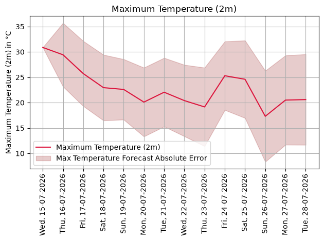
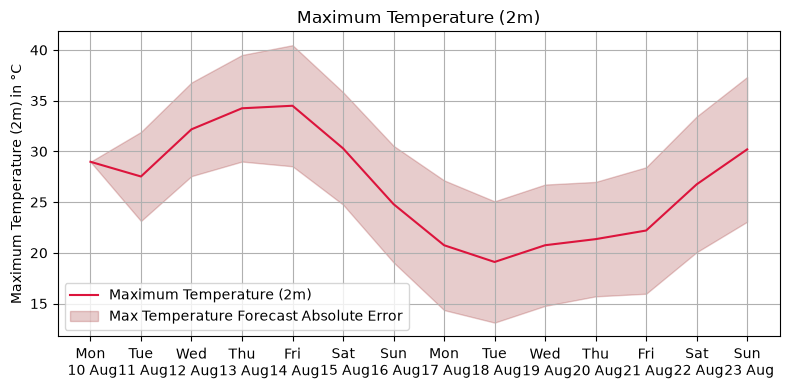
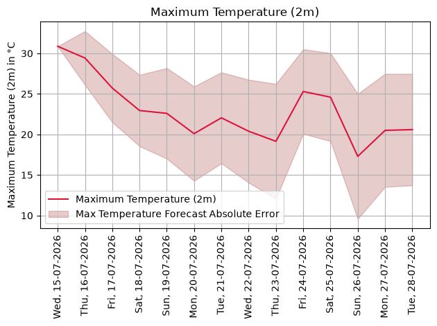
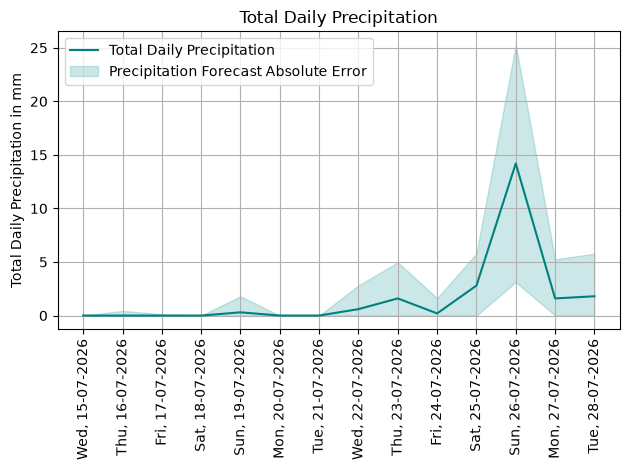

Quickstart
This workflow is for a user who wants to use a basic linear model without tuning and would like to generate and plot uncertainty bounds for a weather forecast of a specific city.
Imports
[1]:
from pyfue.config import Config
from pyfue.data import Data
from pyfue.forecast import Forecast
from pyfue.models import LinearUncertaintyModel, MLUncertaintyModel
Data Workflow
Initialize Configuration (using the default settings from config.json) and Data objects
[ ]:
config = Config(path="../../../config.json")
data = Data(config)
Read the historical raw dataset from disk to train a quick baseline model
[3]:
data.read_raw()
dataset = data.generate_dataset()
Train a Linear Model
Extract the configured feature and target column names
[ ]:
features = config.feature_columns
targets = config.target_columns
[5]:
linear_model = LinearUncertaintyModel(config=config)
linear_model.fit(dataset, features, targets)
[5]:
<pyfue.models.linear_model.LinearUncertaintyModel at 0x713112a2f770>
Train a Machine Learning Model
[6]:
ml_model = MLUncertaintyModel(
config=config, hidden_layer_sizes=(32, 16), max_iter=1000, alpha=0.01, ensemble_size=5, seed=42
)
ml_model.fit(dataset, features, targets)
[6]:
<pyfue.models.ml_model.MLUncertaintyModel at 0x7131126fb0e0>
Generate a Forecast
… for a specific city and for a certain number of days
[ ]:
forecast = Forecast(config)
forecast.fetch_forecast(location_name="aachen", forecast_days=14, past_days=0)
Use the uncertainty model to estimate uncertainty bounds and visualize them
[8]:
forecast.compute_uncertainties(linear_model)
forecast.plot(target_variables=["abs_diff__temperature_2m_max", "abs_diff__precipitation_sum"])


Now, we plot the uncertainty bounds using the machine learning model
[9]:
forecast.compute_uncertainties(ml_model)
forecast.plot(target_variables=["abs_diff__temperature_2m_max", "abs_diff__precipitation_sum"])

